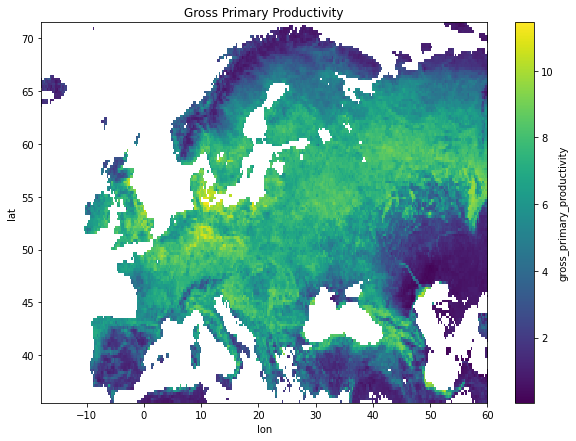
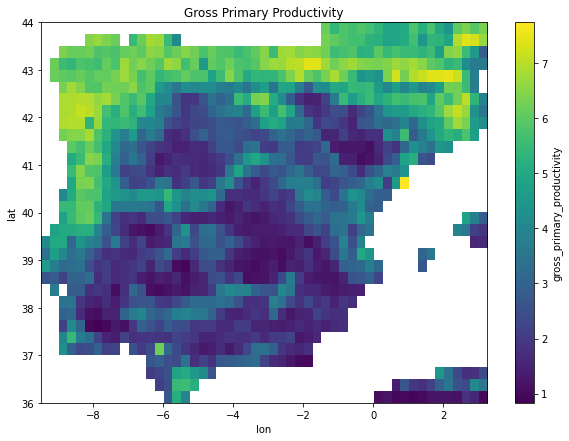

Earth Science Data Cubes¶
- Author: J. Emmanuel Johnson
- Source: Notebook I | Notebook II
The kind folks behind the Earth System Data Lab (Data Cube System for Copernicus, DCS4SOP) have been developing a package called xcube which will allow processing ESDC a lot easier. I tried using it a while back but I didn't have any success so I kind of gave up on it and decided to use some of my own functions. But they recently announced on their forum that the package was ready. So I decided to test it out and see how it works.
My Background¶
I've been working with the datacubes for quite some time and I've learned a lot thanks to their efforts. I was even a part of their Early Adopters program which allowed me to use their homegrown JupyterLab system (sign up for access here). I learned a lot about xarray data structures in general, and it really motivated me to try and incorporate different spatial-temporal data representation considerations in my research and thesis. What was super nice was that they had all of the data readily available for use and all I had to do was tinker with my algorithms on their server. But I still wanted some stuff to be on my home machine, my lab machine and possibly on google colab. Nothing heavy but just some light protoyping. So this is nice for those of us who don't necessarily want to use their system but would still like to play with the data. They went the extra mile and even made this package called xcube. Now, for my purposes, I like it because it handles a lot of masking and clipping. But that's just the tip of the iceberg...
#@title Install Appropriate packages
# requirements
!pip install xarray zarr shapely affine rasterio geopandas
# Cartopy
!apt-get install libproj-dev proj-data proj-bin
!apt-get install libgeos-dev
!pip install --upgrade -e "git+https://github.com/SciTools/Cartopy.git#egg=cartopy"
# xcube package from source
!pip install --upgrade "git+https://github.com/dcs4cop/xcube.git#egg=xcube" --pre
Requirement already satisfied: xarray in /usr/local/lib/python3.6/dist-packages (0.15.1)
Collecting zarr
[?25l Downloading https://files.pythonhosted.org/packages/a3/87/383d77399148ef0772da3472b513ecf143252e7c365c51b0f06714800366/zarr-2.4.0.tar.gz (3.3MB)
[K |████████████████████████████████| 3.3MB 4.9MB/s eta 0:00:01
[?25hRequirement already satisfied: shapely in /usr/local/lib/python3.6/dist-packages (1.7.0)
Collecting affine
Downloading https://files.pythonhosted.org/packages/ac/a6/1a39a1ede71210e3ddaf623982b06ecfc5c5c03741ae659073159184cd3e/affine-2.3.0-py2.py3-none-any.whl
Collecting rasterio
[?25l Downloading https://files.pythonhosted.org/packages/c7/81/13321f88f582a00705c5f348724728e8999136e19d6e7c56f7e6ac9bb7f9/rasterio-1.1.3-cp36-cp36m-manylinux1_x86_64.whl (18.1MB)
[K |████████████████████████████████| 18.1MB 221kB/s
[?25hCollecting geopandas
[?25l Downloading https://files.pythonhosted.org/packages/83/c5/3cf9cdc39a6f2552922f79915f36b45a95b71fd343cfc51170a5b6ddb6e8/geopandas-0.7.0-py2.py3-none-any.whl (928kB)
[K |████████████████████████████████| 931kB 45.9MB/s
[?25hRequirement already satisfied: pandas>=0.25 in /usr/local/lib/python3.6/dist-packages (from xarray) (1.0.3)
Requirement already satisfied: numpy>=1.15 in /usr/local/lib/python3.6/dist-packages (from xarray) (1.18.2)
Requirement already satisfied: setuptools>=41.2 in /usr/local/lib/python3.6/dist-packages (from xarray) (46.1.3)
Collecting asciitree
Downloading https://files.pythonhosted.org/packages/2d/6a/885bc91484e1aa8f618f6f0228d76d0e67000b0fdd6090673b777e311913/asciitree-0.3.3.tar.gz
Collecting fasteners
Downloading https://files.pythonhosted.org/packages/18/bd/55eb2d6397b9c0e263af9d091ebdb756b15756029b3cededf6461481bc63/fasteners-0.15-py2.py3-none-any.whl
Collecting numcodecs>=0.6.4
[?25l Downloading https://files.pythonhosted.org/packages/53/2a/1dc435cbd1d082827190a3e46168fd04f74e266e91313969d5a1aab601bf/numcodecs-0.6.4.tar.gz (3.8MB)
[K |████████████████████████████████| 3.8MB 35.6MB/s
[?25hCollecting snuggs>=1.4.1
Downloading https://files.pythonhosted.org/packages/cc/0e/d27d6e806d6c0d1a2cfdc5d1f088e42339a0a54a09c3343f7f81ec8947ea/snuggs-1.4.7-py3-none-any.whl
Collecting click-plugins
Downloading https://files.pythonhosted.org/packages/e9/da/824b92d9942f4e472702488857914bdd50f73021efea15b4cad9aca8ecef/click_plugins-1.1.1-py2.py3-none-any.whl
Requirement already satisfied: attrs in /usr/local/lib/python3.6/dist-packages (from rasterio) (19.3.0)
Requirement already satisfied: click<8,>=4.0 in /usr/local/lib/python3.6/dist-packages (from rasterio) (7.1.1)
Collecting cligj>=0.5
Downloading https://files.pythonhosted.org/packages/e4/be/30a58b4b0733850280d01f8bd132591b4668ed5c7046761098d665ac2174/cligj-0.5.0-py3-none-any.whl
Collecting pyproj>=2.2.0
[?25l Downloading https://files.pythonhosted.org/packages/ce/37/705ee471f71130d4ceee41bbcb06f3b52175cb89273cbb5755ed5e6374e0/pyproj-2.6.0-cp36-cp36m-manylinux2010_x86_64.whl (10.4MB)
[K |████████████████████████████████| 10.4MB 35.9MB/s
[?25hCollecting fiona
[?25l Downloading https://files.pythonhosted.org/packages/ec/20/4e63bc5c6e62df889297b382c3ccd4a7a488b00946aaaf81a118158c6f09/Fiona-1.8.13.post1-cp36-cp36m-manylinux1_x86_64.whl (14.7MB)
[K |████████████████████████████████| 14.7MB 330kB/s
[?25hRequirement already satisfied: pytz>=2017.2 in /usr/local/lib/python3.6/dist-packages (from pandas>=0.25->xarray) (2018.9)
Requirement already satisfied: python-dateutil>=2.6.1 in /usr/local/lib/python3.6/dist-packages (from pandas>=0.25->xarray) (2.8.1)
Collecting monotonic>=0.1
Downloading https://files.pythonhosted.org/packages/ac/aa/063eca6a416f397bd99552c534c6d11d57f58f2e94c14780f3bbf818c4cf/monotonic-1.5-py2.py3-none-any.whl
Requirement already satisfied: six in /usr/local/lib/python3.6/dist-packages (from fasteners->zarr) (1.12.0)
Requirement already satisfied: pyparsing>=2.1.6 in /usr/local/lib/python3.6/dist-packages (from snuggs>=1.4.1->rasterio) (2.4.7)
Collecting munch
Downloading https://files.pythonhosted.org/packages/cc/ab/85d8da5c9a45e072301beb37ad7f833cd344e04c817d97e0cc75681d248f/munch-2.5.0-py2.py3-none-any.whl
Building wheels for collected packages: zarr, asciitree, numcodecs
Building wheel for zarr (setup.py) ... [?25l[?25hdone
Created wheel for zarr: filename=zarr-2.4.0-cp36-none-any.whl size=127066 sha256=15a01a752735178395c62259774a61067bb995b595672010b4e6ce9c1b6b5289
Stored in directory: /root/.cache/pip/wheels/e1/5b/25/24c685604b91139aba00a5b6299b53e7a0661f737f27782559
Building wheel for asciitree (setup.py) ... [?25l[?25hdone
Created wheel for asciitree: filename=asciitree-0.3.3-cp36-none-any.whl size=5037 sha256=7edc59bb90e23a65af89b80c00531734a45399622f80e90d6308bfc410a2ef7b
Stored in directory: /root/.cache/pip/wheels/1d/d9/58/9808b306744df0208fccc640d3d9952a5bc7468502d42897d5
Building wheel for numcodecs (setup.py) ... [?25l[?25hdone
Created wheel for numcodecs: filename=numcodecs-0.6.4-cp36-cp36m-linux_x86_64.whl size=3887834 sha256=29d82c507f5118052062d8eabc2f5d73ac157160933bd3d802a9ce320824fdcc
Stored in directory: /root/.cache/pip/wheels/ca/07/ed/fea2e120cbb91d90b577c5ac56b4b082024f56fcd88e9afa55
Successfully built zarr asciitree numcodecs
Installing collected packages: asciitree, monotonic, fasteners, numcodecs, zarr, affine, snuggs, click-plugins, cligj, rasterio, pyproj, munch, fiona, geopandas
Successfully installed affine-2.3.0 asciitree-0.3.3 click-plugins-1.1.1 cligj-0.5.0 fasteners-0.15 fiona-1.8.13.post1 geopandas-0.7.0 monotonic-1.5 munch-2.5.0 numcodecs-0.6.4 pyproj-2.6.0 rasterio-1.1.3 snuggs-1.4.7 zarr-2.4.0
Reading package lists... Done
Building dependency tree
Reading state information... Done
proj-data is already the newest version (4.9.3-2).
proj-data set to manually installed.
The following NEW packages will be installed:
libproj-dev proj-bin
0 upgraded, 2 newly installed, 0 to remove and 25 not upgraded.
Need to get 232 kB of archives.
After this operation, 1,220 kB of additional disk space will be used.
Get:1 http://archive.ubuntu.com/ubuntu bionic/universe amd64 libproj-dev amd64 4.9.3-2 [199 kB]
Get:2 http://archive.ubuntu.com/ubuntu bionic/universe amd64 proj-bin amd64 4.9.3-2 [32.3 kB]
Fetched 232 kB in 1s (221 kB/s)
Selecting previously unselected package libproj-dev:amd64.
(Reading database ... 144568 files and directories currently installed.)
Preparing to unpack .../libproj-dev_4.9.3-2_amd64.deb ...
Unpacking libproj-dev:amd64 (4.9.3-2) ...
Selecting previously unselected package proj-bin.
Preparing to unpack .../proj-bin_4.9.3-2_amd64.deb ...
Unpacking proj-bin (4.9.3-2) ...
Setting up libproj-dev:amd64 (4.9.3-2) ...
Setting up proj-bin (4.9.3-2) ...
Processing triggers for man-db (2.8.3-2ubuntu0.1) ...
Reading package lists... Done
Building dependency tree
Reading state information... Done
Suggested packages:
libgdal-doc
The following NEW packages will be installed:
libgeos-dev
0 upgraded, 1 newly installed, 0 to remove and 25 not upgraded.
Need to get 73.1 kB of archives.
After this operation, 486 kB of additional disk space will be used.
Get:1 http://archive.ubuntu.com/ubuntu bionic/universe amd64 libgeos-dev amd64 3.6.2-1build2 [73.1 kB]
Fetched 73.1 kB in 1s (103 kB/s)
Selecting previously unselected package libgeos-dev.
(Reading database ... 144601 files and directories currently installed.)
Preparing to unpack .../libgeos-dev_3.6.2-1build2_amd64.deb ...
Unpacking libgeos-dev (3.6.2-1build2) ...
Setting up libgeos-dev (3.6.2-1build2) ...
Processing triggers for man-db (2.8.3-2ubuntu0.1) ...
Obtaining cartopy from git+https://github.com/SciTools/Cartopy.git#egg=cartopy
Cloning https://github.com/SciTools/Cartopy.git to ./src/cartopy
Running command git clone -q https://github.com/SciTools/Cartopy.git /content/src/cartopy
Requirement already satisfied, skipping upgrade: numpy>=1.10 in /usr/local/lib/python3.6/dist-packages (from cartopy) (1.18.2)
Requirement already satisfied, skipping upgrade: shapely>=1.5.6 in /usr/local/lib/python3.6/dist-packages (from cartopy) (1.7.0)
Collecting pyshp>=1.1.4
[?25l Downloading https://files.pythonhosted.org/packages/27/16/3bf15aa864fb77845fab8007eda22c2bd67bd6c1fd13496df452c8c43621/pyshp-2.1.0.tar.gz (215kB)
[K |████████████████████████████████| 225kB 4.6MB/s
[?25hRequirement already satisfied, skipping upgrade: six>=1.3.0 in /usr/local/lib/python3.6/dist-packages (from cartopy) (1.12.0)
Requirement already satisfied, skipping upgrade: setuptools>=0.7.2 in /usr/local/lib/python3.6/dist-packages (from cartopy) (46.1.3)
Building wheels for collected packages: pyshp
Building wheel for pyshp (setup.py) ... [?25l[?25hdone
Created wheel for pyshp: filename=pyshp-2.1.0-cp36-none-any.whl size=32609 sha256=efc7f234f85d0ce31808aba7dd43198b43e72e98160f95ca5baf460b0995375d
Stored in directory: /root/.cache/pip/wheels/a6/0c/de/321b5192ad416b328975a2f0385f72c64db4656501eba7cc1a
Successfully built pyshp
Installing collected packages: pyshp, cartopy
Running setup.py develop for cartopy
Successfully installed cartopy pyshp-2.1.0
Collecting xcube
Cloning https://github.com/dcs4cop/xcube.git to /tmp/pip-install-a7xvjrrb/xcube
Running command git clone -q https://github.com/dcs4cop/xcube.git /tmp/pip-install-a7xvjrrb/xcube
Building wheels for collected packages: xcube
Building wheel for xcube (setup.py) ... [?25l[?25hdone
Created wheel for xcube: filename=xcube-0.5.0.dev0-cp36-none-any.whl size=254711 sha256=af0624d45739778a65f51561a4c17150748e96a81cfd600c60f90c7ca6653336
Stored in directory: /tmp/pip-ephem-wheel-cache-k0atts5z/wheels/72/9a/d0/f71cb2f8bc29e8ca6db15d80daaf4330b814aba9b2aaadd6b1
Successfully built xcube
Installing collected packages: xcube
Successfully installed xcube-0.5.0.dev0
#@title Core Packages
import shapely
import geopandas as gpd
from sklearn.linear_model import Ridge
from sklearn.ensemble import RandomForestRegressor
# core xcube packages
from xcube.core.dsio import open_cube
from xcube.core.geom import (
clip_dataset_by_geometry,
mask_dataset_by_geometry,
clip_dataset_by_geometry,
rasterize_features
)
# plotting packages
import matplotlib.pyplot as plt
import cartopy
import cartopy.crs as ccrs
# load cube from bit bucket
cube_from_s3_bucket = open_cube("https://obs.eu-de.otc.t-systems.com/obs-esdc-v2.0.0/esdc-8d-0.25deg-1x720x1440-2.0.0.zarr")
cube_from_s3_bucket
1. Visualizing the Datacube¶
There have been some fantastic upgrades to the xarray package. For example, visualizing the datacube is great and has an html format which drop-down boxes in a recent [release]((http://xarray.pydata.org/en/stable/whats-new.html#new-features).
#@title Visualize a Variable
cube_from_s3_bucket[['land_surface_temperature', 'root']]
- time: 1702
- lat: 720
- lon: 1440
- dask.array<chunksize=(1, 720, 1440), meta=np.ndarray>
Array Chunk Bytes 7.06 GB 4.15 MB Shape (1702, 720, 1440) (1, 720, 1440) Count 1703 Tasks 1702 Chunks Type float32 numpy.ndarray - lat(lat)float3289.875 89.625 ... -89.625 -89.875
array([ 89.875, 89.625, 89.375, ..., -89.375, -89.625, -89.875], dtype=float32) - lon(lon)float32-179.875 -179.625 ... 179.875
array([-179.875, -179.625, -179.375, ..., 179.375, 179.625, 179.875], dtype=float32) - time(time)datetime64[ns]1980-01-05 ... 2016-12-30
- bounds :
- time_bnds
- long_name :
- time
- standard_name :
- time
array(['1980-01-05T00:00:00.000000000', '1980-01-13T00:00:00.000000000', '1980-01-21T00:00:00.000000000', ..., '2016-12-14T00:00:00.000000000', '2016-12-22T00:00:00.000000000', '2016-12-30T00:00:00.000000000'], dtype='datetime64[ns]')
- ID :
- 69
- esa_cci_path :
- nan
- long_name :
- Land Surface Temperature
- orig_attrs :
- {'comment': 'Advanced Along Track Scanning Radiometer pixel land surface temperature product', 'long_name': 'Land Surface Temperature', 'orig_attrs': {}, 'project_name': 'GlobTemperature', 'references': 'Jiménez, C., et al. "Inversion of AMSR‐E observations for land surface temperature estimation: 1. Methodology and evaluation with station temperature." Journal of Geophysical Research: Atmospheres 122.6 (2017): 3330-3347.', 'source_name': 'LST', 'standard_name': 'surface_temperature', 'units': 'K', 'url': 'http://data.globtemperature.info/'}
- orig_version :
- nan
- project_name :
- GlobTemperature
- time_coverage_end :
- 2011-12-31
- time_coverage_resolution :
- P8D
- time_coverage_start :
- 2002-05-21
- units :
- K
- url :
- http://data.globtemperature.info/
2. Visualizing Maps¶
We can use the built-in function with xarray. There are more advanced ways but that's for another time.
fig, ax = plt.subplots(figsize=(10,7))
gpp_data = cube_from_s3_bucket.gross_primary_productivity.sel(time=slice('June-2010', 'June-2010'))
gpp_data.mean(dim='time', skipna=True).plot.pcolormesh(
ax=ax, cmap='viridis', robust=True,
)
ax.set_title('Gross Primary Productivity')
# ax.coastlines()
plt.show()
/usr/local/lib/python3.6/dist-packages/dask/array/numpy_compat.py:40: RuntimeWarning: invalid value encountered in true_divide
x = np.divide(x1, x2, out)

2. Making Subsets¶
Often times we never really want to work with the entire globe: we want to take a subset. I have been working with the western part of EuroAsia and a bit with the north of Africa. One way we can do it is naively by simply slicing the dataframe with the locations we want.
In this example, I'll use the following coordinates:
- Latitude: 35N-71.5N
- Longitude: 18E - 60W
#@title Slicing
# subset using xarray slicing
europe = gpp_data.sel(lat=slice(71.5, 35.5), lon=slice(-18.0, 60.0))
fig, ax = plt.subplots(figsize=(10,7))
europe.mean(dim='time').plot.imshow(ax=ax, cmap='viridis', robust=False)
ax.set_title('Gross Primary Productivity')
plt.show()
/usr/local/lib/python3.6/dist-packages/dask/array/numpy_compat.py:40: RuntimeWarning: invalid value encountered in true_divide
x = np.divide(x1, x2, out)

We can also use the bounding box provided by the xcube package which is much cleaner and more flexible.
x1 = -18.0 # lon1, degree
x2 = 60.0 # lon2, degree
y1 = 35.5 # lat1, degree
y2 = 71.5 # lat2, degree
coords = x1, y1, x2, y2
#@title xcube
# convert into shapely bounding box
bbox = shapely.geometry.box(*coords)
# subset the cube with the bounding box
europe = xcube.core.geom.clip_dataset_by_geometry(gpp_data, bbox)
fig, ax = plt.subplots(figsize=(10,7))
europe.mean(dim='time').plot.imshow(ax=ax, cmap='viridis', robust=False)
ax.set_title('Gross Primary Productivity')
plt.show()
/usr/local/lib/python3.6/dist-packages/dask/array/core.py:348: FutureWarning: elementwise comparison failed; returning scalar instead, but in the future will perform elementwise comparison
o = func(*args, **kwargs)
/usr/local/lib/python3.6/dist-packages/dask/array/core.py:348: FutureWarning: elementwise comparison failed; returning scalar instead, but in the future will perform elementwise comparison
o = func(*args, **kwargs)
/usr/local/lib/python3.6/dist-packages/dask/array/core.py:348: FutureWarning: elementwise comparison failed; returning scalar instead, but in the future will perform elementwise comparison
o = func(*args, **kwargs)
/usr/local/lib/python3.6/dist-packages/dask/array/core.py:348: FutureWarning: elementwise comparison failed; returning scalar instead, but in the future will perform elementwise comparison
o = func(*args, **kwargs)
/usr/local/lib/python3.6/dist-packages/dask/array/core.py:348: FutureWarning: elementwise comparison failed; returning scalar instead, but in the future will perform elementwise comparison
o = func(*args, **kwargs)
/usr/local/lib/python3.6/dist-packages/dask/array/numpy_compat.py:40: RuntimeWarning: invalid value encountered in true_divide
x = np.divide(x1, x2, out)

3. Shape Files and Masks¶
That was my custom area. But what about if someone gives you a specific shape file that they want you to subset. Or perhaps you would like to subset an entire region, e.g. North America or Spain. Dealing with shape files is quite easy but having to convert them into rasters isn't exactly trivial. We'll use geopandas to deal with the shape file.
# get shape file location in package
shp_file_loc = gpd.datasets.get_path('naturalearth_lowres')
# read shape file
shp_gdf = gpd.read_file(shp_file_loc)
shp_gdf.head()
| pop_est | continent | name | iso_a3 | gdp_md_est | geometry | |
|---|---|---|---|---|---|---|
| 0 | 920938 | Oceania | Fiji | FJI | 8374.0 | MULTIPOLYGON (((180.00000 -16.06713, 180.00000... |
| 1 | 53950935 | Africa | Tanzania | TZA | 150600.0 | POLYGON ((33.90371 -0.95000, 34.07262 -1.05982... |
| 2 | 603253 | Africa | W. Sahara | ESH | 906.5 | POLYGON ((-8.66559 27.65643, -8.66512 27.58948... |
| 3 | 35623680 | North America | Canada | CAN | 1674000.0 | MULTIPOLYGON (((-122.84000 49.00000, -122.9742... |
| 4 | 326625791 | North America | United States of America | USA | 18560000.0 | MULTIPOLYGON (((-122.84000 49.00000, -120.0000... |
So we have a shape file with columns as queries. The queries are basically all of the columns except for the geometry as that holds the shape file. The post important features are the continent and the geometry. We'll need these.
For this, Let's extract North America.
query = 'North America'
column = 'continent'
# subset shape files within NA
na_shp_clf = shp_gdf[shp_gdf[column] == query]
# let's collapse all shape files into one big shapefile
na_shp_clf = na_shp_clf.dissolve(by='continent').head()
na_shp_clf.head()
| geometry | pop_est | name | iso_a3 | gdp_md_est | |
|---|---|---|---|---|---|
| continent | |||||
| North America | MULTIPOLYGON (((-61.68000 10.76000, -61.10500 ... | 35623680 | Canada | CAN | 1674000.0 |
na_shp_clf.plot()
<matplotlib.axes._subplots.AxesSubplot at 0x7f07c17606a0>

Now we can use the convenience function mask_dataset_by_geometry so that we can set all values not in NA to NANs.
masked_gpp = mask_dataset_by_geometry(
cube_from_s3_bucket[['gross_primary_productivity']].sel(time=slice('June-2010', 'June-2010')),
na_shp_clf.geometry.values[0]
)
masked_gpp
- lat: 307
- lon: 640
- time: 4
- lat(lat)float3283.875 83.625 ... 7.625 7.375
array([83.875, 83.625, 83.375, ..., 7.875, 7.625, 7.375], dtype=float32)
- time(time)datetime64[ns]2010-06-06 ... 2010-06-30
- bounds :
- time_bnds
- long_name :
- time
- standard_name :
- time
array(['2010-06-06T00:00:00.000000000', '2010-06-14T00:00:00.000000000', '2010-06-22T00:00:00.000000000', '2010-06-30T00:00:00.000000000'], dtype='datetime64[ns]') - lon(lon)float32-171.875 -171.625 ... -12.125
array([-171.875, -171.625, -171.375, ..., -12.625, -12.375, -12.125], dtype=float32)
- gross_primary_productivity(time, lat, lon)float32dask.array<chunksize=(1, 307, 640), meta=np.ndarray>
- ID :
- 47
- esa_cci_path :
- nan
- long_name :
- Gross Primary Productivity
- orig_attrs :
- {'comment': 'Gross Carbon uptake of of the ecosystem through photosynthesis', 'long_name': 'Gross Primary Productivity', 'orig_attrs': {}, 'project_name': 'FLUXCOM', 'references': 'Tramontana, Gianluca, et al. "Predicting carbon dioxide and energy fluxes across global FLUXNET sites with regression algorithms." (2016).', 'source_name': 'GPPall', 'standard_name': 'gross_primary_productivity_of_carbon', 'units': 'gC m-2 day-1', 'url': 'http://www.fluxcom.org/'}
- orig_version :
- v1
- project_name :
- FLUXCOM
- time_coverage_end :
- 2015-12-31
- time_coverage_resolution :
- P8D
- time_coverage_start :
- 2001-01-05
- units :
- gC m-2 day-1
- url :
- http://www.fluxcom.org/
Array Chunk Bytes 3.14 MB 785.92 kB Shape (4, 307, 640) (1, 307, 640) Count 1716 Tasks 4 Chunks Type float32 numpy.ndarray
- Metadata_conventions :
- Unidata Dataset Discovery v1.0
- acknowledgment :
- The ESDL team acknowledges all data providers!
- chunking :
- 1x720x1440
- comment :
- none.
- contributor_name :
- Max Planck Institute for Biogeochemistry
- contributor_role :
- ESDL Science Lead
- creator_email :
- info@earthsystemdatalab.net
- creator_name :
- Brockmann Consult GmbH
- creator_url :
- www.earthsystemdatalab.net
- date_created :
- 17.12.2018
- date_issued :
- 19.12.2018
- date_modified :
- 2020-04-15T19:43:14.640733
- geospatial_lat_max :
- 84.0
- geospatial_lat_min :
- 7.25
- geospatial_lon_max :
- -12.0
- geospatial_lon_min :
- -172.0
- geospatial_resolution :
- 1/4deg
- history :
- - processing with esdl cube v0.1 (https://github.com/esa-esdl/esdl-core/)
- id :
- v2.0.0
- institution :
- Brockmann Consult GmbH
- keywords :
- Earth Science, Geophysical Variables
- license :
- Please refer to individual variables
- naming_authority :
- Earth System Data Lab team
- processing_level :
- Level 4
- project :
- ESA Earth System Data Lab
- publisher_email :
- info@earthsystemdatalab.net
- publisher_name :
- Brockmann Consult GmbH & Max Planck Institute for Biogechemistry
- publisher_url :
- www.brockmann-consult.de
- standard_name_vocabulary :
- CF-1.7
- summary :
- This data set contains a data cube of Earth System variables created by the ESA project Earth System Data Lab.
- time_coverage_duration :
- P37Y
- time_coverage_end :
- 30.12.2016
- time_coverage_resolution :
- P8D
- time_coverage_start :
- 05.01.1980
- title :
- Earth System Data Cube
- geospatial_lon_units :
- degrees_east
- geospatial_lon_resolution :
- 0.25
- geospatial_lat_units :
- degrees_north
- geospatial_lat_resolution :
- 0.25
fig, ax = plt.subplots(figsize=(10,7))
masked_gpp.gross_primary_productivity.mean(dim='time').plot.imshow(ax=ax, cmap='viridis', robust=False)
ax.set_title('Gross Primary Productivity')
plt.show()
/usr/local/lib/python3.6/dist-packages/dask/array/numpy_compat.py:40: RuntimeWarning: invalid value encountered in true_divide
x = np.divide(x1, x2, out)

We can do the same thing with Spain.
query = 'Spain'
column = 'name'
spain_shp_df = shp_gdf[shp_gdf[column] == query]
# let's collapse all shape files into one big shapefile
spain_shp_df = spain_shp_df.dissolve(by='continent').head()
# plot
spain_shp_df.plot(); spain_shp_df.head()
| geometry | pop_est | name | iso_a3 | gdp_md_est | |
|---|---|---|---|---|---|
| continent | |||||
| Europe | POLYGON ((-7.45373 37.09779, -7.53711 37.42890... | 48958159 | Spain | ESP | 1690000.0 |

Let's see the difference between mask and clip.
#@title Masking
masked_gpp = mask_dataset_by_geometry(
cube_from_s3_bucket[['gross_primary_productivity']].sel(time=slice('June-2010', 'June-2010')),
spain_shp_df.geometry.values[0])
fig, ax = plt.subplots(figsize=(10,7))
masked_gpp.gross_primary_productivity.mean(dim='time').plot.imshow(ax=ax, cmap='viridis', robust=False)
ax.set_title('Gross Primary Productivity')
plt.show(); masked_gpp
/usr/local/lib/python3.6/dist-packages/dask/array/numpy_compat.py:40: RuntimeWarning: invalid value encountered in true_divide
x = np.divide(x1, x2, out)

- lat: 32
- lon: 51
- time: 4
- lat(lat)float3243.875 43.625 ... 36.375 36.125
array([43.875, 43.625, 43.375, 43.125, 42.875, 42.625, 42.375, 42.125, 41.875, 41.625, 41.375, 41.125, 40.875, 40.625, 40.375, 40.125, 39.875, 39.625, 39.375, 39.125, 38.875, 38.625, 38.375, 38.125, 37.875, 37.625, 37.375, 37.125, 36.875, 36.625, 36.375, 36.125], dtype=float32) - time(time)datetime64[ns]2010-06-06 ... 2010-06-30
- bounds :
- time_bnds
- long_name :
- time
- standard_name :
- time
array(['2010-06-06T00:00:00.000000000', '2010-06-14T00:00:00.000000000', '2010-06-22T00:00:00.000000000', '2010-06-30T00:00:00.000000000'], dtype='datetime64[ns]') - lon(lon)float32-9.375 -9.125 ... 2.875 3.125
array([-9.375, -9.125, -8.875, -8.625, -8.375, -8.125, -7.875, -7.625, -7.375, -7.125, -6.875, -6.625, -6.375, -6.125, -5.875, -5.625, -5.375, -5.125, -4.875, -4.625, -4.375, -4.125, -3.875, -3.625, -3.375, -3.125, -2.875, -2.625, -2.375, -2.125, -1.875, -1.625, -1.375, -1.125, -0.875, -0.625, -0.375, -0.125, 0.125, 0.375, 0.625, 0.875, 1.125, 1.375, 1.625, 1.875, 2.125, 2.375, 2.625, 2.875, 3.125], dtype=float32)
- gross_primary_productivity(time, lat, lon)float32dask.array<chunksize=(1, 32, 51), meta=np.ndarray>
- ID :
- 47
- esa_cci_path :
- nan
- long_name :
- Gross Primary Productivity
- orig_attrs :
- {'comment': 'Gross Carbon uptake of of the ecosystem through photosynthesis', 'long_name': 'Gross Primary Productivity', 'orig_attrs': {}, 'project_name': 'FLUXCOM', 'references': 'Tramontana, Gianluca, et al. "Predicting carbon dioxide and energy fluxes across global FLUXNET sites with regression algorithms." (2016).', 'source_name': 'GPPall', 'standard_name': 'gross_primary_productivity_of_carbon', 'units': 'gC m-2 day-1', 'url': 'http://www.fluxcom.org/'}
- orig_version :
- v1
- project_name :
- FLUXCOM
- time_coverage_end :
- 2015-12-31
- time_coverage_resolution :
- P8D
- time_coverage_start :
- 2001-01-05
- units :
- gC m-2 day-1
- url :
- http://www.fluxcom.org/
Array Chunk Bytes 26.11 kB 6.53 kB Shape (4, 32, 51) (1, 32, 51) Count 1716 Tasks 4 Chunks Type float32 numpy.ndarray
- Metadata_conventions :
- Unidata Dataset Discovery v1.0
- acknowledgment :
- The ESDL team acknowledges all data providers!
- chunking :
- 1x720x1440
- comment :
- none.
- contributor_name :
- Max Planck Institute for Biogeochemistry
- contributor_role :
- ESDL Science Lead
- creator_email :
- info@earthsystemdatalab.net
- creator_name :
- Brockmann Consult GmbH
- creator_url :
- www.earthsystemdatalab.net
- date_created :
- 17.12.2018
- date_issued :
- 19.12.2018
- date_modified :
- 2020-04-15T19:48:52.627587
- geospatial_lat_max :
- 44.0
- geospatial_lat_min :
- 36.0
- geospatial_lon_max :
- 3.25
- geospatial_lon_min :
- -9.5
- geospatial_resolution :
- 1/4deg
- history :
- - processing with esdl cube v0.1 (https://github.com/esa-esdl/esdl-core/)
- id :
- v2.0.0
- institution :
- Brockmann Consult GmbH
- keywords :
- Earth Science, Geophysical Variables
- license :
- Please refer to individual variables
- naming_authority :
- Earth System Data Lab team
- processing_level :
- Level 4
- project :
- ESA Earth System Data Lab
- publisher_email :
- info@earthsystemdatalab.net
- publisher_name :
- Brockmann Consult GmbH & Max Planck Institute for Biogechemistry
- publisher_url :
- www.brockmann-consult.de
- standard_name_vocabulary :
- CF-1.7
- summary :
- This data set contains a data cube of Earth System variables created by the ESA project Earth System Data Lab.
- time_coverage_duration :
- P37Y
- time_coverage_end :
- 30.12.2016
- time_coverage_resolution :
- P8D
- time_coverage_start :
- 05.01.1980
- title :
- Earth System Data Cube
- geospatial_lon_units :
- degrees_east
- geospatial_lon_resolution :
- 0.25
- geospatial_lat_units :
- degrees_north
- geospatial_lat_resolution :
- 0.25
#@title Clipping
masked_gpp = clip_dataset_by_geometry(
cube_from_s3_bucket[['gross_primary_productivity']].sel(time=slice('June-2010', 'June-2010')),
spain_shp_df.geometry.values[0])
fig, ax = plt.subplots(figsize=(10,7))
masked_gpp.gross_primary_productivity.mean(dim='time').plot.imshow(ax=ax, cmap='viridis', robust=False)
ax.set_title('Gross Primary Productivity')
plt.show(); masked_gpp
/usr/local/lib/python3.6/dist-packages/dask/array/numpy_compat.py:40: RuntimeWarning: invalid value encountered in true_divide
x = np.divide(x1, x2, out)

- lat: 32
- lon: 51
- time: 4
- lat(lat)float3243.875 43.625 ... 36.375 36.125
array([43.875, 43.625, 43.375, 43.125, 42.875, 42.625, 42.375, 42.125, 41.875, 41.625, 41.375, 41.125, 40.875, 40.625, 40.375, 40.125, 39.875, 39.625, 39.375, 39.125, 38.875, 38.625, 38.375, 38.125, 37.875, 37.625, 37.375, 37.125, 36.875, 36.625, 36.375, 36.125], dtype=float32) - time(time)datetime64[ns]2010-06-06 ... 2010-06-30
- bounds :
- time_bnds
- long_name :
- time
- standard_name :
- time
array(['2010-06-06T00:00:00.000000000', '2010-06-14T00:00:00.000000000', '2010-06-22T00:00:00.000000000', '2010-06-30T00:00:00.000000000'], dtype='datetime64[ns]') - lon(lon)float32-9.375 -9.125 ... 2.875 3.125
array([-9.375, -9.125, -8.875, -8.625, -8.375, -8.125, -7.875, -7.625, -7.375, -7.125, -6.875, -6.625, -6.375, -6.125, -5.875, -5.625, -5.375, -5.125, -4.875, -4.625, -4.375, -4.125, -3.875, -3.625, -3.375, -3.125, -2.875, -2.625, -2.375, -2.125, -1.875, -1.625, -1.375, -1.125, -0.875, -0.625, -0.375, -0.125, 0.125, 0.375, 0.625, 0.875, 1.125, 1.375, 1.625, 1.875, 2.125, 2.375, 2.625, 2.875, 3.125], dtype=float32)
- gross_primary_productivity(time, lat, lon)float32dask.array<chunksize=(1, 32, 51), meta=np.ndarray>
- ID :
- 47
- esa_cci_path :
- nan
- long_name :
- Gross Primary Productivity
- orig_attrs :
- {'comment': 'Gross Carbon uptake of of the ecosystem through photosynthesis', 'long_name': 'Gross Primary Productivity', 'orig_attrs': {}, 'project_name': 'FLUXCOM', 'references': 'Tramontana, Gianluca, et al. "Predicting carbon dioxide and energy fluxes across global FLUXNET sites with regression algorithms." (2016).', 'source_name': 'GPPall', 'standard_name': 'gross_primary_productivity_of_carbon', 'units': 'gC m-2 day-1', 'url': 'http://www.fluxcom.org/'}
- orig_version :
- v1
- project_name :
- FLUXCOM
- time_coverage_end :
- 2015-12-31
- time_coverage_resolution :
- P8D
- time_coverage_start :
- 2001-01-05
- units :
- gC m-2 day-1
- url :
- http://www.fluxcom.org/
Array Chunk Bytes 26.11 kB 6.53 kB Shape (4, 32, 51) (1, 32, 51) Count 1711 Tasks 4 Chunks Type float32 numpy.ndarray
- Metadata_conventions :
- Unidata Dataset Discovery v1.0
- acknowledgment :
- The ESDL team acknowledges all data providers!
- chunking :
- 1x720x1440
- comment :
- none.
- contributor_name :
- Max Planck Institute for Biogeochemistry
- contributor_role :
- ESDL Science Lead
- creator_email :
- info@earthsystemdatalab.net
- creator_name :
- Brockmann Consult GmbH
- creator_url :
- www.earthsystemdatalab.net
- date_created :
- 17.12.2018
- date_issued :
- 19.12.2018
- date_modified :
- 2020-04-15T19:48:36.984828
- geospatial_lat_max :
- 44.0
- geospatial_lat_min :
- 36.0
- geospatial_lon_max :
- 3.25
- geospatial_lon_min :
- -9.5
- geospatial_resolution :
- 1/4deg
- history :
- - processing with esdl cube v0.1 (https://github.com/esa-esdl/esdl-core/)
- id :
- v2.0.0
- institution :
- Brockmann Consult GmbH
- keywords :
- Earth Science, Geophysical Variables
- license :
- Please refer to individual variables
- naming_authority :
- Earth System Data Lab team
- processing_level :
- Level 4
- project :
- ESA Earth System Data Lab
- publisher_email :
- info@earthsystemdatalab.net
- publisher_name :
- Brockmann Consult GmbH & Max Planck Institute for Biogechemistry
- publisher_url :
- www.brockmann-consult.de
- standard_name_vocabulary :
- CF-1.7
- summary :
- This data set contains a data cube of Earth System variables created by the ESA project Earth System Data Lab.
- time_coverage_duration :
- P37Y
- time_coverage_end :
- 30.12.2016
- time_coverage_resolution :
- P8D
- time_coverage_start :
- 05.01.1980
- title :
- Earth System Data Cube
- geospatial_lon_units :
- degrees_east
- geospatial_lon_resolution :
- 0.25
- geospatial_lat_units :
- degrees_north
- geospatial_lat_resolution :
- 0.25
We see that clip formulates a bounding box around the data given the geometry whereas mask will be more precise with the shape file geometry. So if you want more precision in your regions, you'll probably want to mask the data whereas if it doesn't matter to you very much (not to me as you saw in my crude bounding box above), then clip is enough.
What Now?¶
Where there are many more things to explore. I just touched the surface because for my needs, this is already perfect as I'm more focused on other things. But I would like to point out some other nuggets that they have:
More Information
They have a link which shows all of the cubes they currently have. They have a few with different spatial resolutions and some configurations are more optimized for spatial computations than temporal computations. The latest public complete list of all variables can be found here. And more information about the organization DCS4COP can be found here.
Viewer
They have their own viewer that you can run locally or view the cubes via the server